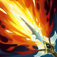

核心裝備
 盧登回音
盧登回音7.2b 提高回音傷害並降冷卻，特別適合柔依反覆遠距命中。

巫妖之禍大絕進出與撿技能後常能安全補一發強化普攻，增加單點爆發。
 無限寶珠
無限寶珠睡眠連段把目標壓低後能進一步提高斬殺傷害。
 死亡之帽
死亡之帽放大長距離 1 技與 3 技後的整套爆發。
 虛空之杖
虛空之杖敵方魔抗成形後維持後期穿透。
Zoe · 睡眠抓人／超遠距爆發型法師
3 技命中前不要急著把 1 技打掉，睡眠後再用最遠距離 1 技吃完整增傷。大絕主要用來延長 1 技距離、偷角度或撿地上的召喚師技能，不要把它當成真正位移往前站。
本站評級理由：柔依在單線能從遠距角度反覆用 1 技壓血線，3 技睡眠沿牆與狹窄通道特別難躲；一旦有人被睡到，完整 1 技常能直接打掉大半血。7.1g 又提高 1、3 技基礎傷害，7.2b 盧登強化後遠距消耗更有壓力。
標準 ARAM 沿用既有歷史修正：傷害輸出 110%、承受傷害 95%。6.2g 的承傷 95%→85% 列於 AAA ARAM，未套用一般 ARAM。7.1g 另提高 1 技與 3 技基礎傷害。
7.2b 提高回音傷害並降冷卻，特別適合柔依反覆遠距命中。

大絕進出與撿技能後常能安全補一發強化普攻，增加單點爆發。
睡眠連段把目標壓低後能進一步提高斬殺傷害。
放大長距離 1 技與 3 技後的整套爆發。
敵方魔抗成形後維持後期穿透。

頻繁使用 1、3 技需要穩定魔力與前期法強。

升級後補法穿，把長距離 1 技爆發最大化。
完整睡眠連段很容易一次觸發，強化單點爆發。

大絕位移後接技能能取得額外穿透收益。
連續技能或普攻命中後補上額外適性傷害，適合完整打一套的英雄。

ARAM 擊殺助攻密集，快速累積法強。
縮短 1、3 技循環，增加抓人次數。

柔依雖有大絕但會回原位，閃現仍是唯一真正改變位置的保命工具。

被刺客抓到或大絕回點被預判時提高生存。
1 技 > 3 技 > 2 技
ARAM 開局三個基礎技能各點 1 級，之後主升 1 技、次升 3 技；大絕能點就點。7.1g 強化 1、3 技基礎傷害後此順序更穩。
用 3 技找牆體角度，命中後先拉開 1 技再用大絕延長距離。沒睡到人時不要為了硬中 1 技把自己送到前排。
盧登與巫妖後，每次睡眠都有逼閃或擊殺壓力。地上有好用召喚師技能時再冒險撿，位置不安全就放棄。
保持在後排用超遠距離找角度，敵方有刺客時大絕回點要非常小心。只要睡到一名主力，就能讓對方在團戰前先少大量血量。
 中婭沙漏
中婭沙漏可替換巫妖或虛空，提供關鍵保命。
 女妖面紗
女妖面紗避免被第一個技能直接抓死。
 水仙三叉戟
水仙三叉戟可替換一件爆發裝處理護盾。
看遊戲卡片下方分類 → 點相同分類 → 看左側 S+／S／A。
飛星與睡眠都是主要輸出／控制來源，遠距技能增幅能被柔依完整利用。
投射物速度、傷害與投射技能加速都會直接放大飛星與睡眠的威脅。
三技能睡眠是整套爆發的起點，控制增幅能提高抓人成功率。
技能連招能穩定命中並觸發額外雷霆傷害，補足單發爆發。
長時間遠距消耗需要魔力支撐，魔力類能降低斷檔。
跑速能幫助調整飛星距離與撿取召喚師技能時的站位。
v80.9.0 ARAM S 第七批：柔依保留標準 ARAM 110% 輸出／95% 承傷，未誤套 AAA ARAM 85% 承傷；同步 7.1g 技能傷害與 7.2b 盧登強化。
ARAM 使用獨立於召喚峽谷的資料集；本站會把官方模式平衡、單線 5v5 特性與出裝／符文適配分開判斷，而不是直接複製峽谷配置。